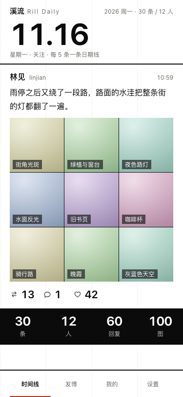
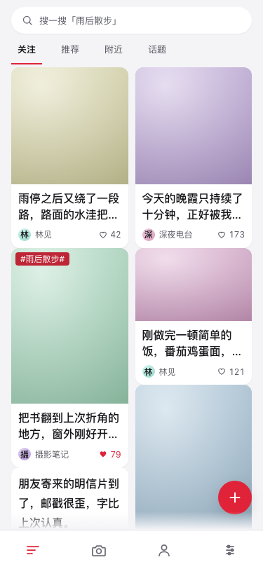
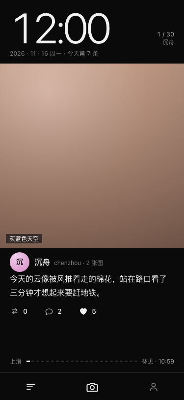

verifier 独立渲染与实测（非 designer 截图）｜真 375 走 CDP Emulation.setDeviceMetricsOverride，1440 走 --window-size；每张 PNG 的 IHDR 宽 = innerWidth = 目标宽
推荐顺序 A › C › B A「日报」是唯一能扛真实内容的一支：九宫格原生 3×3、详情里的原博有 quote rail 且不裁切、1440 是真三栏（报头 + 日期栏 + 正文栏 + 侧栏）。C 稳但没声音，转发卡在双列窄栏里把原博压到 3 行截断。B 最漂亮也最脆：一屏一条 + 单张大图的骨架放不下九宫格（注入 9 图后媒体块 1875px，超出屏底 1191px）。

把一天 30 条排成一版报纸：报头 + 巨字日期 + 四列栅格，数字即图形。
| 可读性实测 | ✅ 正文 16px / 对比度 19.68（像素复核 19.52）；标签 12px / 最低 5.64 |
| 转发卡 | ✅ 实测 335×100，clamp=none，原博不裁 |
| 九宫格 | ✅ 实测 3×3、335×335、格 111×111、9 张全可见 |
| 长文折叠 | ❌ clamp 6 行生效但无「展开」入口；详情长文 +277px 被 .screen 裁掉且无滚动 |
| 视频封面 | ❌ 无任何 video/播放结构（0 命中） |
| 导航 / 1440 | 底部 4 项 tabbar｜✅ 1440 真三栏（日期栏 300 / 正文 736 / 侧栏 260） |
| 迁移成本 | 42 token、组件 CSS 约 186 行（我核：token 差异数吻合） |
| 风险 | 密度低（一屏 1 条）；长文与视频是硬缺口 |

双列瀑布 + 红点强调：最像中文内容产品的骨架，信息密度最高（一屏 6 卡）。
| 可读性实测 | ✅ 正文 16px / 对比度 18.04（像素复核 17.89）；标签 12px / 最低 4.57 |
| 转发卡 | ❌ 双列窄卡里原博压到 126.5×105.2，3 行截断（pClip=true，29 字被裁）；详情页干脆没有内嵌原博 |
| 九宫格 | ⚠️ 整宽卡 3×3 成立（343×343、格 111.7）；半宽卡只有 1 个封面 +「9 图」角标，信息降级 |
| 长文折叠 | ❌ clamp 2 行（时间线）/ 6 行（详情），同样无展开入口；详情 +294px 被裁 |
| 视频封面 | ❌ 同 A：无任何 video/播放结构 |
| 导航 / 1440 | 底部 tabbar + 浮动按钮｜⚠️ 1440 是同一面墙拉宽（wall 1376），不是桌面专属版式 |
| 迁移成本 | 31 token、组件 CSS 约 166 行；需改 timeline.js 渲染与滚动恢复（双列） |
| 风险 | 转发语义在窄栏里塌；双列下长标题/长昵称挤压 |

一屏一条、满版大图、时间戳当签名：最强烈的「此刻感」，但骨架只能装一条。
| 可读性实测 | ✅ 正文 16px / 对比度 17.68（像素复核 17.68）；标签 12px / 最低 4.88 |
| 转发卡 | ⚠️ 详情内 quote 335×107.5 成立；但转发帖与原博被拆成两个整屏，关联靠记忆（结构实测：全页无 [data-card] 列表） |
| 九宫格 | ❌ 注入 9 图后媒体块 1875px，超出屏底 1191px |
| 长文折叠 | ❌ clamp 6 行、无展开入口；详情 +653px 被裁（三方向里最严重） |
| 视频封面 | ❌ 同 A/C：无任何 video/播放结构 |
| 导航 / 1440 | 底部 dock｜❌ 1440 是拉长的手机（bar/shots/who/body/acts/pager 直接铺满 1440） |
| 迁移成本 | 40 token、组件 CSS 约 139 行；但时间线要从列表改分页 → timeline.js 要改渲染与滚动恢复 |
| 风险 | 任何「多条/多图/长文」的内容都会把它撑破 |
更看重「信息密度 / 像中文内容产品」→ 选 C：一屏 6 卡，双列瀑布，红点强调；代价是转发语义在窄栏塌掉、1440 只是拉宽。
更看重「一屏一条的沉浸感」→ 选 B：它把详情做成满版单屏 + 时间戳签名；但需要先解决九宫格与长文的承载。
三条共同的硬缺口（t22 修）：长文没有「展开」入口、视频封面完全没设计、空 feed 无空态文案——三方向实测均为 ❌。